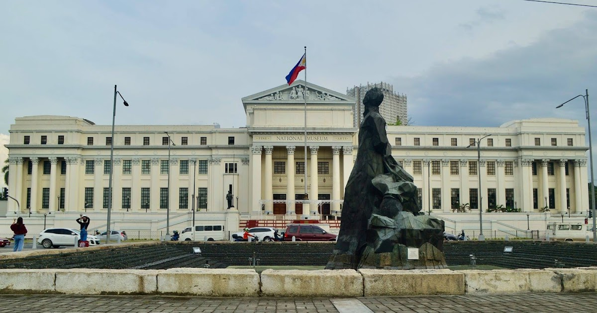
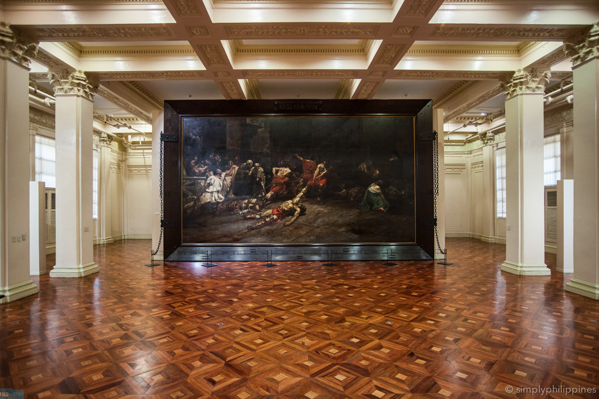

The National Museum of Fine Arts is located in Manila, along Padre Burgos Avenue in Rizal Park, one of the city's most historic and accessible areas. It stands near other major cultural landmarks such as the National Museum of Anthropology and the National Museum of Natural History, forming part of the National Museum Complex. Its central location makes it easy to visit and places the museum at the heart of the country's cultural and historical district.
The National Museum of Fine Arts in Manila occupies a neoclassical building originally constructed in 1926 as the Legislative Building of the Philippines. It served as the seat of the Philippine Legislature and later Congress, and was heavily damaged during the Battle of Manila in World War II before being restored. In 1998, the building was transferred to the National Museum and converted into the National Museum of Fine Arts, housing the country's premier collection of Filipino visual art. Today, it preserves and showcases significant works from the 19th century to the contemporary period, reflecting the nation's artistic and cultural heritage.
I love the National Museum of Fine Arts because it allows me to connect deeply with Philippine history, culture, and creativity all in one place. Walking through its halls feels inspiring and peaceful, as each artwork tells a story about the Filipino identity and struggles. The beauty of the building itself, combined with the powerful artworks inside, makes every visit meaningful and memorable.
“Art enables us to find ourselves and lose ourselves at the same time.”
-Thomas Merton , No Man Is an Island